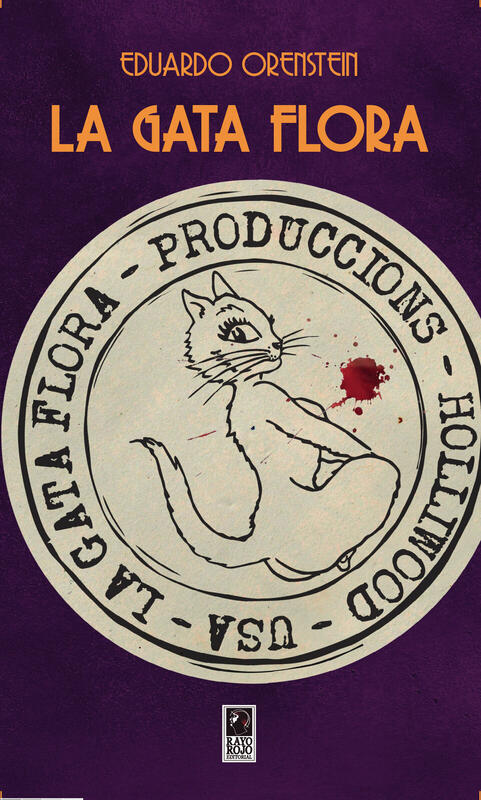

La Gata Flora
Por Eduardo Orenstein
12,5 × 20 cm · Tapa blanda con solapas · 188 pp.
¿Qué tiene en común el ilustrador de gatos Louis Wain, las guerreras Sailor Moon del animé japonés, el nitrato que provoca incendios y se convierte en peines, y una película pornográfica que codician todos? No es una adivinanza lógica, sino un coctel explosivo que solo pueden armar los coleccionistas. Importante: agregue por lo menos cinco muertos.
Comprar